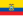

Diplomatic missions of the European Union

The member states of the European Union are aligned in their foreign policy on many issues. The EU is the world's largest economic union, customs union and donor of humanitarian and development assistance and thus has an extensive network of delegations around the world mainly operating in the framework of External Relations, for which the European Commission is the main decision body. The EU also represents shared political and security viewpoints held by its member states, as articulated in the Common Foreign and Security Policy.
The EU's predecessor, the European Coal and Steel Community, opened its first mission in London in 1955, after three years non-EU countries began to accredit their missions in Brussels to the Community. The US had been a fervent supporter of the ECSC's efforts from the beginning, and Secretary of State Dean Acheson sent Jean Monnet a dispatch in the name of President Truman confirming full US diplomatic recognition of the ECSC. A US ambassador to the ECSC was accredited soon thereafter, and he headed the second overseas mission to establish diplomatic relations with the Community institutions.[1]
The number of delegates began to rise in the 1960s following the merging of the executive institutions of the three European Communities into a single Commission. Until recently some states had reservations accepting that EU delegations held the full status of a diplomatic mission. Article 20 of the Maastricht Treaty requires the Delegations and the Member States' diplomatic missions to "co-operate in ensuring that the common positions and joint actions adopted by the Council are complied with and implemented".
Management of the EU External Relations is conducted by the European External Action Service which reports to the High Representative for Foreign Affairs. Delegates are generally sent only to capital cities and cities hosting multilateral bodies.
The EU missions work separately from the work of the missions of its member states, however in some circumstances it may share resources and facilities. In Abuja, the EU mission shares its premises with a number of member states.[2] The European Commission also maintains representation in each of the member states.[3] For details on diplomatic representation, see Foreign relations of the European Union#Diplomatic representation.
Europe
[edit] Albania
Albania
 Armenia
Armenia
 Azerbaijan
Azerbaijan
- Baku (Delegation)
 Belarus
Belarus
- Minsk (Delegation)
 Bosnia and Herzegovina
Bosnia and Herzegovina
- Sarajevo (Delegation)
 Georgia
Georgia
 Iceland
Iceland
 Kosovo
Kosovo
 Moldova
Moldova
 Montenegro
Montenegro
- Podgorica (Delegation)
 North Macedonia
North Macedonia
 Norway
Norway
 Russia
Russia
- Moscow (Delegation)
 Serbia
Serbia
 Switzerland
Switzerland
 Turkey
Turkey
- Ankara (Delegation)
 Ukraine
Ukraine
 United Kingdom
United Kingdom
Africa
[edit] Algeria
Algeria
- Algiers (Delegation)
 Angola
Angola
 Benin
Benin
- Cotonou (Delegation)
 Botswana
Botswana
 Burkina Faso
Burkina Faso
- Ouagadougou (Delegation [a])
 Burundi
Burundi
 Cameroon
Cameroon
 Cape Verde
Cape Verde
 Central African Republic
Central African Republic
 Chad
Chad
 Comoros[7]
Comoros[7]
 Congo-Brazzaville
Congo-Brazzaville
- Brazzaville (Delegation)
 Congo-Kinshasa
Congo-Kinshasa
- Kinshasa (Delegation)
 Djibouti
Djibouti
 Egypt
Egypt
- Cairo (Delegation)
 Eritrea
Eritrea
 Eswatini[8]
Eswatini[8]
- Mbabane (Delegation)
 Ethiopia
Ethiopia
- Addis Ababa (Delegation [a])
 Gabon
Gabon
- Libreville (Delegation)
 Gambia
Gambia
- Banjul (Delegation)
 Ghana
Ghana
 Guinea
Guinea
- Conakry (Delegation)
 Guinea-Bissau
Guinea-Bissau
 Ivory Coast
Ivory Coast
 Kenya
Kenya
 Lesotho
Lesotho
 Liberia
Liberia
 Libya
Libya
- Tripoli (Delegation)
 Madagascar
Madagascar
- Antananarivo (Delegation [a])
 Malawi
Malawi
 Mali
Mali
- Bamako (Delegation)
 Mauritania
Mauritania
- Nouakchott (Delegation)
 Mauritius
Mauritius
- Port Louis (Delegation [a])
 Morocco
Morocco
- Rabat (Delegation)
 Mozambique
Mozambique
 Namibia
Namibia
- Windhoek (Delegation)
 Niger
Niger
 Nigeria
Nigeria
 Rwanda
Rwanda
 Senegal
Senegal
 Sierra Leone
Sierra Leone
 Somalia
Somalia
 South Africa
South Africa
 South Sudan[9]
South Sudan[9]
 Sudan
Sudan
 Tanzania
Tanzania
- Dar es Salaam (Delegation [a])
 Togo
Togo
 Tunisia
Tunisia
- Tunis (Delegation)
 Uganda
Uganda
 Zambia
Zambia
- Lusaka (Delegation)
 Zimbabwe
Zimbabwe
Americas
[edit]
 Argentina
Argentina
- Buenos Aires (Delegation)
 Barbados
Barbados
- Bridgetown (Delegation)
 Bolivia
Bolivia
- La Paz (Delegation)
 Brazil
Brazil
- Brasília (Delegation)
 Canada
Canada
 Chile
Chile
- Santiago de Chile (Delegation)
 Costa Rica
Costa Rica
- San Jose (Delegation)
 Colombia
Colombia
- Bogotá (Delegation)
 Cuba
Cuba
- Havana (Delegation)
 Dominican Republic
Dominican Republic
- Santo Domingo (Delegation)
-  Ecuador
- Quito (Delegation)
 El Salvador
El Salvador
- San Salvador (Delegation)
 Guatemala
Guatemala
- Ciudad de Guatemala (Delegation)
 Guyana
Guyana
- Georgetown (Delegation)
 Haiti
Haiti
- Port-au-Prince (Delegation)
 Honduras
Honduras
- Tegucigalpa (Delegation)
 Jamaica
Jamaica
- Kingston (Delegation)
 Mexico
Mexico
- Mexico City (Delegation)
 Nicaragua
Nicaragua
- Managua (Delegation)
 Panama
Panama
- Panama City (Delegation)
 Paraguay
Paraguay
- Asunción (Delegation)
 Peru
Peru
- Lima (Delegation)
 Trinidad and Tobago
Trinidad and Tobago
- Port of Spain (Delegation)
 United States
United States
- Washington, D.C. (Delegation)
- San Francisco (Office)
 Uruguay
Uruguay
- Montevideo (Delegation)
 Venezuela
Venezuela
- Caracas (Delegation)
Asia
[edit]- Afghanistan
 Bangladesh
Bangladesh
- Dhaka (Delegation)
 Cambodia
Cambodia
- Phnom Penh (Delegation [a])
 China
China
 East Timor
East Timor
 India
India
 Indonesia[10]
Indonesia[10]
 Iraq
Iraq
- Baghdad (Delegation)
 Israel
Israel
- Tel Aviv (Delegation)
 Japan
Japan
- Tokyo (Delegation)
 Jordan
Jordan
- Amman (Delegation)
 Kazakhstan
Kazakhstan
 Kuwait
Kuwait
- Kuwait City (Delegation)[11]
 Kyrgyzstan[12]
Kyrgyzstan[12]
- Bishkek (Delegation)
 Laos[13]
Laos[13]
- Vientiane (Delegation)
 Lebanon
Lebanon
- Beirut (Delegation)
 Malaysia
Malaysia
- Kuala Lumpur (Delegation)
 Mongolia
Mongolia
- Ulaanbaatar (Delegation)
 Myanmar
Myanmar
- Yangon (Delegation)
 Nepal
Nepal
- Kathmandu (Delegation)
 Pakistan
Pakistan
- Islamabad (Delegation)
 Palestine
Palestine
- East Jerusalem (Technical Assistance Office)
 Philippines
Philippines
 Qatar
Qatar
 Saudi Arabia
Saudi Arabia
- Riyadh (Delegation)
 Singapore
Singapore
- Singapore (Delegation)
 South Korea
South Korea
- Seoul (Delegation)
 Sri Lanka
Sri Lanka
- Colombo (Delegation)
 Republic of China (Taiwan)
Republic of China (Taiwan)
 Tajikistan
Tajikistan
- Dushanbe (Delegation)
 Thailand
Thailand
 Turkmenistan[15]
Turkmenistan[15]
- Ashgabat (Delegation)
 United Arab Emirates
United Arab Emirates
 Uzbekistan
Uzbekistan
- Tashkent (Delegation)
 Vietnam
Vietnam
Oceania
[edit] Australia
Australia
 Fiji
Fiji
 New Zealand
New Zealand
- Wellington (Delegation [a])
- Auckland (Delegation [a])
 Papua New Guinea
Papua New Guinea
- Port Moresby (Delegation [a])
 Samoa[16]
Samoa[16]
 Solomon Islands
Solomon Islands
 Vanuatu
Vanuatu
- Port Villa (Delegation [a])
Multilateral organisations
[edit]- Addis Ababa (Delegation to the African Union)[a]
- Geneva (Delegation to UN organisations and the World Trade Organization)[17]
- Jakarta (Delegation to ASEAN)[18]
- New York City (Delegation to the United Nations)
- Paris (Delegation to UNESCO and the Organisation for Economic Co-operation and Development)
- Rome (Delegation to the Holy See, Order of Malta, San Marino and UN organisations: Food and Agriculture Organization, WFP, IFAD)[19][20]
- Strasbourg (Delegation to the Council of Europe)
- Vienna (Delegation to the international organisations in Vienna: IAEA, UNODC, UNIDO and the Organization for Security and Co-operation in Europe)[21]
Non-resident Delegation
[edit]Resident in Bridgetown, Barbados
 Antigua and Barbuda
Antigua and Barbuda Dominica
Dominica Grenada
Grenada Saint Kitts and Nevis
Saint Kitts and Nevis Saint Lucia
Saint Lucia Saint Vincent and the Grenadines
Saint Vincent and the Grenadines
Missions to open
[edit]Former Missions
[edit]Notes
[edit]- ^ a b c d e f g h i j k l m n o p q r s t u v w x y z aa ab ac ad ae af ag ah ai aj ak al am an ao ap aq ar as at au av aw ax ay az ba bb bc bd be bf bg bh bi bj bk bl bm bn bo bp As part of the process of establishment of the European External Action Service envisioned in the recently ratified Treaty of Lisbon, on 1 January 2010 all former European Commission delegations were renamed into European Union delegations and till the end of the month 54 of the missions were transformed into embassy-type missions that employ greater powers than the regular delegations. These upgraded delegations have taken on the role previously carried out by the national embassies of the member state holding the rotating Presidency of the Council of the European Union.[4]
See also
[edit]- Accreditations and Responsibilities of EU delegations – for non-resident missions
- Delegations of the European Parliament
- Delegation of the European Union to Canada
- Delegation of the European Union to the United Kingdom
- Delegation of the European Union to the United Nations
- Delegation of the European Union to the United States
- European External Action Service
- Foreign relations of the European Union
- List of diplomatic missions to the European Union
- List of European Union ambassadors
- CARIFORUM
References
[edit]- ^ Taking Europe to the world: 50 years of the European Commission's External Service [permanent dead link]
- ^ Unified External Service of the European Commission Unified External Service of the European Commission
- ^ "Representations in Member States". European Commission. Retrieved 27 February 2020.
- ^ "EU commission 'embassies' granted new powers". EUobserver. 21 January 2010.
- ^ "EEAS content". European External Action Service – European Commission.
- ^ "EU office in northern K. Mitrovica". B92.net. 26 March 2010. Archived from the original on 29 March 2010.
- ^ "Madagascar | EEAS Website".
- ^ "Delegation of the European Union to Eswatini".
- ^ "Delegation of the European Union in Juba, South Sudan".
- ^ "About the EU Delegation to Indonesia and Brunei". Delegation of the European Union to Indonesia and Brunei Darussalam. Retrieved 27 February 2020.
- ^ "EU to open delegation in Kuwait – FM Sheikh Sabah Al-Khaled". Kuwait News Agency. 13 July 2018.
- ^ "Home". Delegation of the European Union to the Kyrgyz Republic.
- ^ "Home". Delegation of the European Union to the Lao PDR.
- ^ "Qatar: Establishment Agreement signed for opening of the EU Delegation in Doha | EEAS Website".
- ^ "Delegation of the European Union in Ashgabat, Turkmenistan".
- ^ "EU opens new office in Samoa". Radio New Zealand. 24 April 2014.
- ^ "Delgva.ec.europa.eu". Archived from the original on 5 December 2011. Retrieved 23 January 2010.
- ^ "PR German-Czech EU Presentation Credentials" (PDF). Asean.org. Archived from the original (PDF) on 13 April 2016. Retrieved 1 December 2010.
- ^ "Delegation of the European Union to the Holy See, Order of Malta, UN Organisations in Rome and to the Republic of San Marino". European External Action Service. Retrieved 22 December 2023.
- ^ "About the Delegation of the European Union to the Holy See, Order of Malta, UN Organisations in Rome, Republic of San Marino". Retrieved 21 January 2021.
- ^ Delvie.ec.europa.eu
- ^ "EU to open office in Tehran in months". 7 November 2016.
- ^ "Decision on Schengen visa waiver for Omanis soon". 7 June 2022.
- ^ "European Union – Suriname Political Dialogue 2021 | EEAS".
- ^ "EU delegation to quit Suriname as part of cost-cutting". 4 January 2013.
- ^ European Commission Memo on Syria, 2014
- ^ "Yemen | EEAS Website".
External links
[edit]- EU Delegations worldwide
- External Relations Directorate of the European Commission
- External Service Directory – accreditations and responsibilities

{kind=link}
{kind=link}
{kind=link}
.jpg){kind=link}
{kind=link}
| Americas | |
|---|---|
| Asia | |
| Europe | |
| Other International Organizations | |
| De Facto | |